Japanese Tarot Cards
Laura Miller
University of Missouri
St. Louis, US
millerlau@umsl.edu
This essay looks at selected images from tarot decks designed in Japan. Tarot decks reflect a deliberate adaptation process across both cultural and temporal borders, with visual components created and customized for a Japanese viewer. My aim is to consider the nature of these changes in imagery and to focus attention on an under-analyzed and mostly femalegendered domain. In particular, I look at the way the medieval European people and elements originally found on the cards are replaced with images from the world of Japanese art, history, and popular culture. These substitutions either gloss over the gaps between Western and Japanese world views or meld them into a new form, allowing the tarot entry into a different or hybrid metaphysical culture. Attention to tarot cards is important because of their great economic and cultural impact in contemporary Japan. A widespread love of tarot in Japan provides insight into domains of pleasure, spiritual exploration, and fandom.
Keywords: Japan, tarot, visual imagery, feminized divination, cultural hybridity
A widespread love of tarot in Japan provides insight into domains of pleasure, spiritual exploration, and fandom. Tarot readings are delivered through face-to-face encounters in divination shops, in malls and busy shopping areas, at festivals and museum events, on tours, and in cafes and bars. Fans are also doing tarot d ivination through computer games, iPhone and iPod applications, automated arcade booths, and online divination sites.1 The best tarot readers, or perhaps those most savvy at marketing their talent, have become national celebrities. The tarot decks and ways of reading them are so well-known and specialized in Japan that divination services often advertise by calling attention to the type of reading performed, including Inspiration Tarot (reikan tarotto), I-Ching Tarot (ekisen tarotto), Spiritual Tarot (supirichuaru tarotto), Western Tarot (seiyō tarotto), and Eastern Tarot (tōyō tarotto). There are many divination vocational schools that offer courses and workshops on how to read and understand tarot cards. These opportunities for learning about tarot invite non-specialist, ordinary people to become more involved in gaining access to tarot culture. Anyone may work as an amateur card designer or non-professional card reader. Since at least the 1980s the divination industry, including tarot card services and production, has been dominated by girls and women. One consequence of this feminization trend in the industry is that female preferences have taken the lead in card layout design and tastes in content. Another is that because it is trivialized as a female domain, tarot culture is routinely neglected by scholars despite its cultural heft and economic weight.
Among an assortment of things I purchased in Japan is a card that shows a woman running down the street with a cute white puppy hanging onto her leg (Figure 1). She jogs along a magenta ground, a blue sky with a purple butterfly and bright sun suspended above. She is wearing pink panties, and a yellow top has slipped beneath her exposed breasts. The words “The Fool” are written in English below the scene. Without context, it might be hard to recognize this as a card from a tarot divination deck. It was created by writer Akatsuki Reika and artist Takano Aya (2010). Takano garnered fame as the protégé of the artist Murakami Takashi and his Superflat movement. Their deck, named Spiritual Tarot, features nude or barely clothed women moving through magical tableaus filled with arcane signs and richly colored settings. These whimsical divination cards join hundreds of other tarot that have been created in Japan, most of them within the last two decades. One collector lists more than 1,500 Japan-made decks in his global compendium.2 Japanese tarot come in many styles, and are created by professional artists, advertisers, and fans.
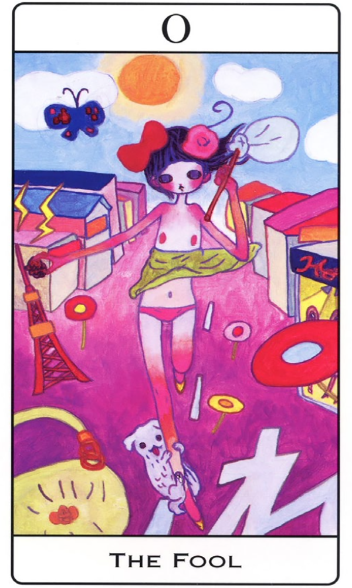
Figure 1: Spiritual Tarot
(Akatsuki and Takano 2010)
As a way to think about this increasingly popular practice, this essay will look at images from a few of the numerous tarot decks designed in Japan. Additional selected cards from the decks discussed here are found in Appendix 1: Supplementary Figures of Japanese Tarot Cards. I find that these tarot reflect a deliberate adaptation or creolization process across both cultural and temporal borders, with visual components customized for a Japanese viewer. My aim is to consider the nature of these changes in imagery and to focus attention on an under-analyzed and mostly female-gendered domain. In particular, the medieval Europeans originally found on the cards are often purged or altered, replaced or mixed with images from the world of Japanese art, history, and popular culture.
This survey of tarot in Japan is based on anthropological ideas about cultural borrowing and innovation. One way to approach the cards is to think about them as beyond cultural appropriation, a term that is fraught with political debate. In its most common anthropological sense, appropriation simply means the adoption or use of elements from an outside or different cultural tradition into another culture. Currently, the construction “cultural appropriation” is best known to mean the taking of cultural property, rituals, or elements within a context of colonization or unequal power. It refers to inappropriate acts of appropriation from a dominant group in which the borrowed elements are used for consumption or feishization. An example is the use of sacred Native American ritual and clothing in mainstream U.S. sports entertainment or as a Halloween costume.
In contrast to this negative form of cultural appropriation, some cultural p ractices are the product of creative borrowing that produces a new and unique amalgam of disparate elements. This mixing, called syncretism, creolization, or cultural hybridity, suggests more than simple borrowing, as it denotes the creation of new cultural forms. It is in this context that I place this survey of tarot in Japan. I believe that these new tarot reflect a complex type of cultural hybridity that often confounds easy separation between Japanese and European or American elements. In a similar vein, the historian Gruzinski (2002, 85) describes the clever appropriations from Europe that together with indigenous Mexican elements formed a “strange, fascinating, inextricable weave.” He notes that such intermingling takes place in layers of time that “combine as much as they contrast” (Gruzinski 2002, 10). Similarly in the case of tarot, it is difficult to determine when or where certain elements in the imagery originated. I try my best to track these bits of visual culture, but nevertheless invite others to refine my analysis, to see new themes and elements that make these cards even more complex and intriguing. In addition, what we see in tarot is not always the product of a simple, one-time, Japan-West encounter. There are “multiple intermediate states and never just two cultures meeting across a clean border” (Gruzinski 2002, 178). The blending of tarot elements in Japan takes place over decades and with different creators and target audiences involved.
Finally, there is the problem of cultural authenticity. Although we can sometimes discern elements as being markedly from either Japanese or EuroAmerican visual culture, these are always generalizations that are open to criticism and challenge. For one thing, finding “authentic” culture in the current global domain is no easy matter. This discontinuity of culture in the modern world was beautifully stated by the anthropologist James Clifford (1988, 14): “Twentieth-century identities no longer presuppose continuous cultures or traditions. Everywhere individuals and groups improvise local performances from (re)collected pasts, drawing on foreign media, symbols, and languages.” An example discussed below is the use of the historical personage Himiko as the Figure of the High Priestess in Japanese tarot decks. Himiko did not arrive on the cards straight from history. Because so little is known about her, especially her appearance, the depictions are pure conjecture and imagination. In some cases she is holding a written text or book, which is historically inaccurate as there was no writing system in Japan during Himiko’s time (170~248 CE). Yet use of Himiko on tarot cards is not simply a decorative move, and she functions well in this context as a symbol of current Japanese concerns and interests.
In addition to their great beauty, creativity, and expressive energy, these new tarot decks function as visual mediations as they lure the divination seeker into a strange land where bodies rise from coffins, men wear snakes as belts, and English knights ride black horses and carry pentagrams. The hybrid or original cards from Japan contain new elements or rhetorical visual devices that help to close the gap between cultures. Often the new tarot of Japan illustrate cultural displacement. For example, the card known as the High Priestess usually shows a female pope sitting on a throne, holding a copy of the Jewish Torah. But on some Japanese cards the High Priestess holds a different type of text: scrolls with non-Latin script or books with odd, invented glyphs on them. Understanding the semiotics of tarot, as well as their role in arts practice, spiritual work, and creative pastime, gives us a new sense of the cultural landscape of Japan today, where anxieties over the economy, the nation’s global status, and even the geological safety of the land itself inspire people to search for hope.
Attention to tarot cards is important because of their great economic and cultural status. The tarot industry is enormously lucrative, and tarot cards and tarot services generate billions of yen each year in profit. Even so, many aspects of tarot culture pass under the mainstream radar and avoid male-controlled routes of distribution. I am interested in looking at tarot not simply because it is a substantial market, but also because it provides recognition of female interests and activities. Despite its presence in a spectrum of media and contexts, it is rarely studied, and is usually trivialized when it is noticed at all. The Japanese media, academic, and business establishments most often report on the feminized divination industry with alarm, mockery, or disdain.
What is tarot? How did it develop in Japan? A cursory examination of the cards themselves suggests that not only are they popular material artifacts that link to other aspects of culture, they are also objects that reach into the imagination through color, design and symbolism. Tarot artists have been very successful in exploiting a spectrum of visual idioms in order to attract Japanese viewers and fans. A short discussion of the history of tarot and their popularity in Japan will help to ground my discussion of specific cards and trends.3
Tarot in Japan
Enthusiasts often debate the origin of tarot cards, even going so far as to claim an ancient lineage to the Babylonians. Most historians agree, however, that the cards began as simple playing cards that entered Europe from Islamic culture around the fourteenth century. Eventually they took on their role as a divination device and acquired the many symbolic meanings and conventions that are associated with them today. Most tarot decks are made up of 78 cards which are divided into two sets: the 22 major arcana, and the 56 minor arcana suit cards. The major arcana cards represent iconic principles (such as Temperance, Justice, Death, and so on), or archetypes (such as the Fool, the Magician, the High Priestess, the Hermit, and others). One of the most popular decks used as a jumping-off point for Japanese artists who want to modify tarot imagery is known as the Rider-Waite-Smith Tarot. Published in London in 1909 by the Rider company, it was illustrated by Pamela Colman Smith (1878–1951) with collaboration on thinking about the meanings from Sir Arthur Waite. Tarot cards are used to forecast the future, for spiritual reflection, and as a psychological tool for self-understanding. They are shuffled and cut into piles by either the person doing the divination or the seeker, and are then arranged into a stack. Cards are selected from the stack and placed into one of several possible face-up layouts. The reader uses the images and symbols on the cards to address the questions or themes of concern to the seeker.
Historians of the occult in Japan mention tarot as having been present there at least by the 1930s, and for the decades up until the 1970s they were part of a general fascination with the occult. Most of the early decks were created by men. Gradually, during the 1970s, tarot began to be widely appreciated and recognizable outside of the avant-garde realms that were dominated by male writers. An example are the crude cut-out cards drawn by Akatsuka Fujio (1935–2008). Akatsuka was a comic manga artist who published a book of cut-out craft items in 1975. It included paper coffee cups, animal figures, and several pages of tarot cards (Akatsuka 1975, Figure 2). Akatsuka’s jokey cards most likely appealed to his male fans more than the young women who were becoming interested in tarot at the time.
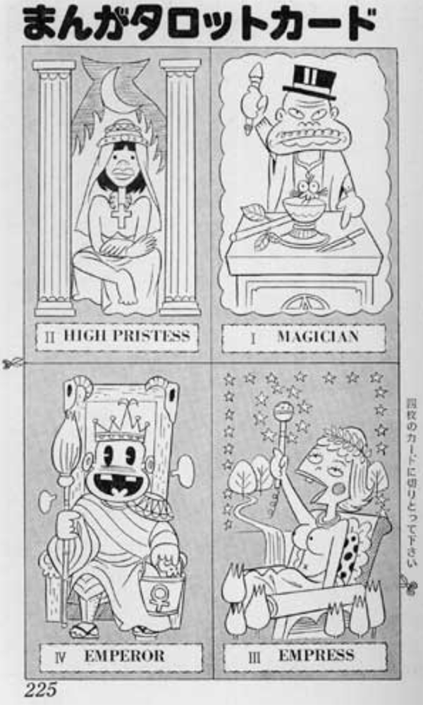
Figure 2: Gag cut-out tarot (Akatsuka 1975)
Today most female tarot designers, readers, and aficionados point to the fortune-telling magazine My Birthday as the key to their passion for the cards. Targeting young girls and teens, My Birthday was published between 1979 and 2006 and was nicknamed Maiba. The magazine frequently contained insert pages of punch out tarot cards on strong card stock that readers could easily retrieve. The magazine also provided guidelines on how to do card readings with friends. Famous tarot readers and card producers sometimes mention My Birthday as the inspiration for their career paths (an example is found in Bi and Umezawa 2004, 2). In 2012 the publisher released a nostalgia issue of My Birthday that included six insert pages of all 78 tarot cards in beautiful color on heavy card stock (Jitsugyo no Nihonsha 2012, Figure 3). Periodicals such as this, as well as other magazines, books, and manga, were significant factors in the development and spread of tarot among girls and women, and are one reason they became so entrenched in female culture.
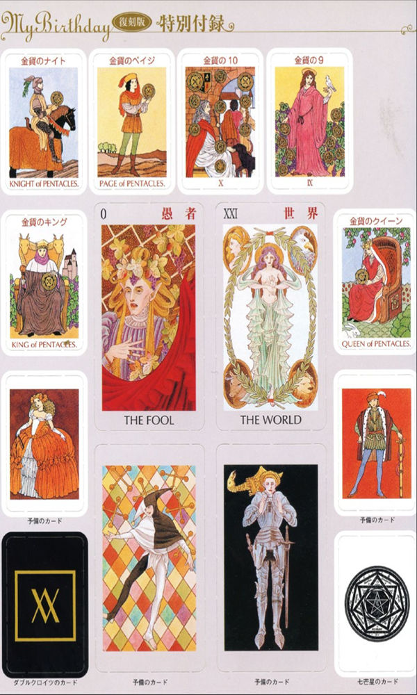
Figure 3: Tarot cut-out page from nostalgia issue of My Birthday magazine, illustrated by Matsuzaki Akemi
(Jitsugyo no Nihonsha 2012)
Although Tarot became tremendously popular in the 1970s, an escalation in appreciation drove the production and consumption of original and hybrid decks after 2000 as Japan entered its second decade of economic stagnation. New designs attract consumers and express creative responses to the moment. Thus, every year a range of new tarot are produced which reflect different ways that people participate in the world of tarot, from serious pursuit to social play. Whether for amusement or for serious inquiry into the future, the majority of decks include only the 22 major arcana cards. There is a similar proliferation of novel decks outside of Japan, where we find new tarot designed by artists such as Salvador Dali, or encoded with themes such as steampunk, zombie, or Celtic. Nevertheless, there is a staggering range of creativity and diversity of card themes and types found in Japan. The Japanese card hunter’s passion has resulted in astonishingly innovative new design motifs, such as a unique deck named the Particle Tarot (Izumi and Kumagai 2009), which presents Mesoamerican imagery alongside bold ornamental fragments and black outline art (Figure 4).
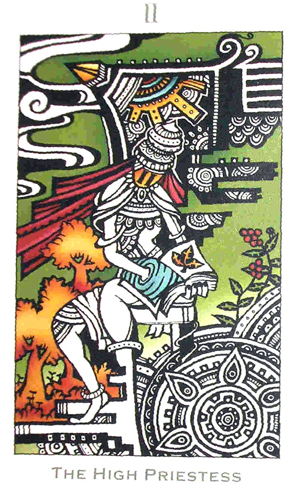
Figure 4: Particle Tarot
(Izumi and Kumagai 2009)
The new cards predominantly reflect the aesthetic preferences of female artists and consumers. In some cases the cards are intentionally humorous and playful. Often, they indicate great effort to domesticate imagery and symbolism through use of distinctly Japanese themes, religion, and historical characters. Some are based on characters from the worlds of popular culture, including Pokemon, Evangelion, Gundam, and the Sony Cat mascot. Famous manga creator Mizuki Shigeru (1922–2015) produced a tarot set that features some of the goblins, phantoms, and other supernatural beings known as yōkai that he helped to popularize (Mizuki 2002). Tarot card imagery is found in all types of media and usually reflects motifs that will appeal to different audiences. Many of the cards have substituted animals for human figures, reflecting a desire to sidestep obvious ethnic and gendered portraits.
Some of the punch-out tarot found in magazines are of high quality in terms of their design and printed color, especially for an item that is free. But not all punch-out magazine tarot are particularly nice or meant to last very long. An example is a deck named Love Love Tarot illustrated by the artist Fukuda Reiko (2003). The cards are small and printed in a limited palette (lots of pink!) on flimsy paper (Figure 5).
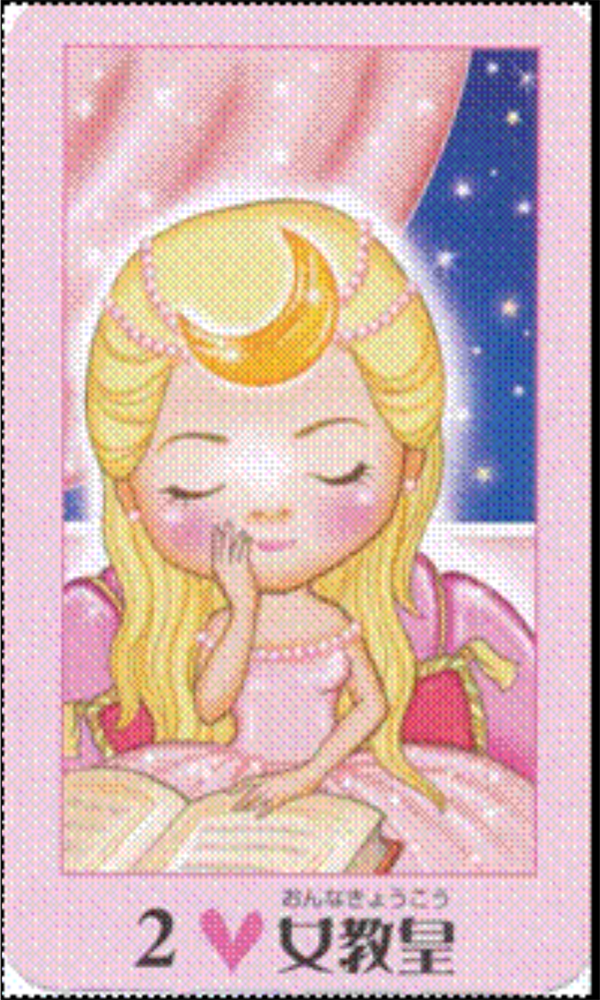
Figure 5: Love Love Tarot
(Fukuda 2003)
Contrasting with the cheaply made tarot one may get as a magazine s upplement, hundreds of premium, lushly produced decks are available for purchase in shops, bookstores, and online. An example is the gorgeous tarot designed by the artist Kasai Ayumi (Kasai and Moon Princess Himiko 2002). Kasai is a popular manga artist who specializes in fantasy, Boys Love, erotic romance, and historical manga. Creating brand tarot is an important side project for Kasai and other artists since it provides a way for them to expand and maintain their fanbase. Kasai uses saturated royal hues to depict novel scenes that meld both Asian and non-Asian elements. For example, on her version of the Queen of Pentacles card (one of the 56 minor arcana suit cards, equivalent to the Queen of Diamonds in the modern playing card deck) the queen is represented as a chimerical mermaid sea snail who is playing a bowed string instrument similar to the an ancient Chinese erhu (Figure 6).
The innovative embellishments and artistic interpretations found in cards like the ones designed by Kasai are a significant aspect of their popularity.
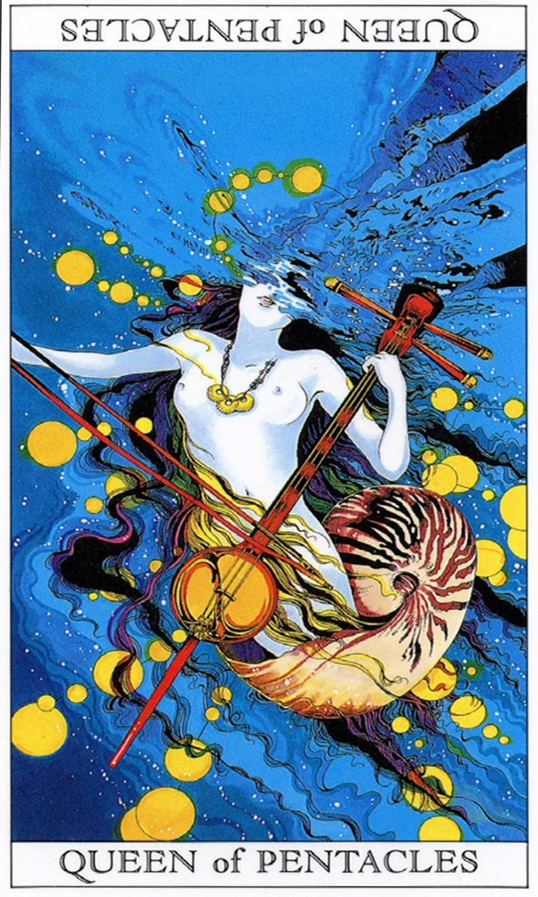
Figure 6: Love and Mystery Tarot
(Kasai and Moon Princess Himiko 2002)
Tarot Aesthetics and Themes
In looking at the variety of tarot now available in Japan, it is clear that by recasting traditional tarot images into new visual idioms, tarot has been able to successfully take its place alongside other visual art forms, such as manga. I would like to point out a few of the specific ways that artists and producers have been able to make tarot so appealing to women and girls. Although the underlying allegorical m eanings might remain, the images are often quite novel and stunning. As the primary producers and consumers of tarot, women and girls have had a considerable impact on tarot culture.
Many of the new tarot decks encode aesthetic preferences that are circulating in female culture. The concept of cuteness, or kawaii, is globally understood as a defining trait of Japanese mass culture. Cute Japanese mascots, fashions, and everyday consumer goods are now broadly consumed and adored around the world. Cute tarot cards are common and widely loved. An example of this most recognizable flavor of straight-up cuteness is a deck produced by the prolific card designer named Kagami Ryūji (2007) in which he used the early 1975 Sanrio characters Little Twin Stars (Figure 7). Little Twin Stars is the name for a pair of siblings called Kiki and Rara. Kagami’s Sparkling Love Tarot features the angelic siblings in scenes that have been cleansed of negative imagery. The Devil card, for example, presents the two in a visual story that denotes someone with devilish intent: Rara mischievously tries to surprise Kiki by giving him a concealed cat in a box. Instead of the towering horned satyr, a lecherous goat-man typically found on the traditional Western tarot, this version lurches toward cute overload. Beloved characters from childhood strategically replace odd foreign supernatural beings. The card’s original meaning of addiction to carnal pleasures and bondage to materialism has been transformed into the idea of devilish prankery and an intention to tease or shock. This type of displacement is common in new decks in Japan and is a theme I will return to later.
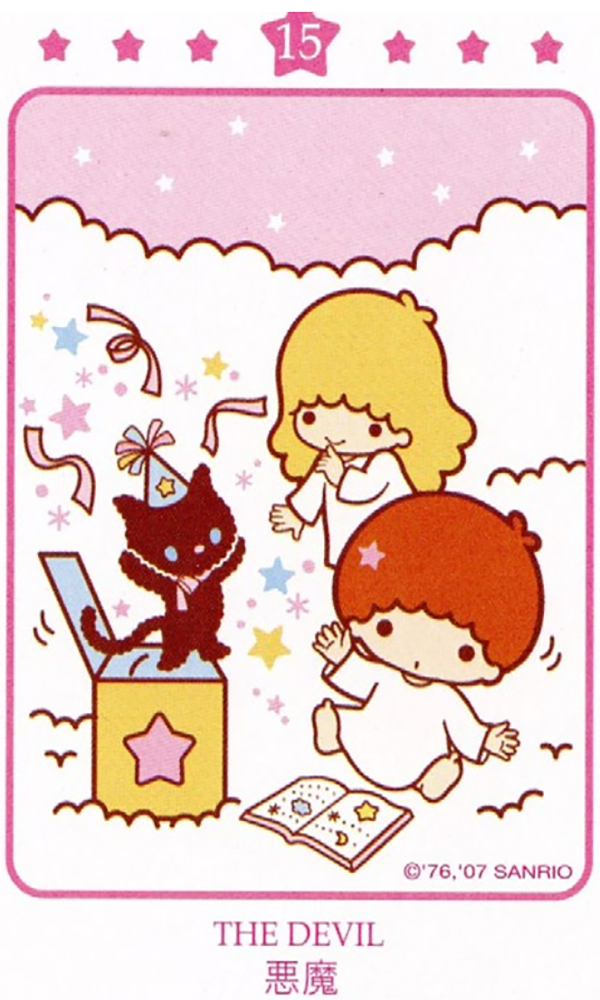
Figure 7: Little Twin Stars and devilish intent (Kagami 2007)
Many Japanese tarot cards are intentionally humorous and playful. In the Hello Kitty deck, the new version of the Devil card depicts Sanrio’s famous Kitty with her paw covering her lower face as if in embarrassment about the forbidden things she is thinking about—jewels, a donut, pudding, and a candy, as revealed to us in a thought bubble. These images have popped into Kitty-chan’s head because the Devil is tempting her (Kagami 2009, Figure 8). When one’s heart is consumed with objects of desire, this is temptation. Anyone might identify with Kitty’s encounter with the Devil and recognize their own fatal attractions in it.
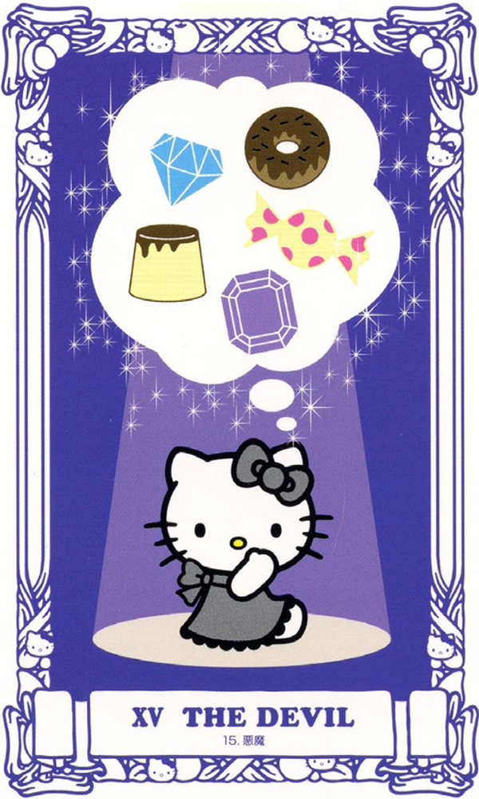
Figure 8: The Devil temps Miss Kitty (Kagami 2009)
While Japanese cute has taken on a flat, mostly saccharine meaning around the globe, we find that in Japanese girl culture there’s been an evolution and diversification in types of cuteness. One kind of cute is guro kawaii (grotesque cute), which combines elements of both the adorable and the warped, unnatural, or creepy. In the last fifteen years, the grotesque cute aesthetic, together with the fantastical and mystical, has become one of the favored styles in the world of tarot. A perfect example of this is the Loveable Girl Skeleton deck created by Hoshi Saori and Satō Yūichirō (2013). Their deck features two characters: a skeleton prince and a skeleton maid. The maid concept is based on the costume of the cafe worker in the maid cafe industry, where young women (primarily) dress up in frilly French maid outfits and serve coffee and bad, microwaved food. On one card, the skeleton maid takes the role of the Magician (usually a male Figure in EuroAmerican decks, Figure 9). The table before the skeleton maid magician is laden with objects representing the four suits, and her pose, as well as the infinity symbol floating above her head, are all similar to those found on the most popular decks outside of Japan. The cute grotesque maid skeleton is a familiar shape in a cryptic scene, making it guro kawaii, familiar and, indeed, loveable. While the esoteric symbolism nods to European tarot imagery, the grotesque cuteness adapts it to Japanese sensibilities.
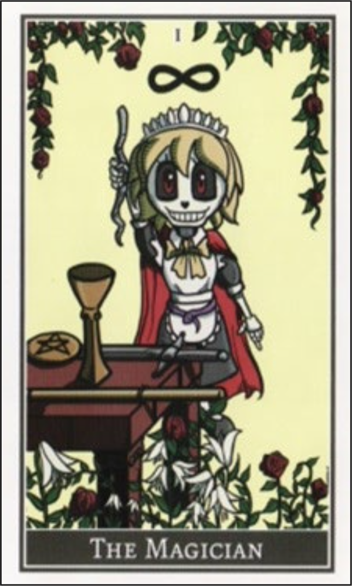
Figure 9: Cute grotesque aesthetics (Hoshi and Satō 2013)
New tarot decks in Japan frequently use animals in place of the medieval human figures that originally populated the decks. This substitution strategy has the positive effect of presenting figures that are not gendered or racially marked, thus turning them into characters that anyone might identify with. For example, the Bi Anjeri Tarot features sweet animal drawings (Bi and Umezawa 2004). Bi wrote that she wanted to design a deck that was easy to understand and that would also help to alleviate worry by giving the user pleasant images with uplifting signs. The card Temperance, for example, denotes moderation, balance, and harmony. For this card, most European decks depict a female or transgender person mixing liquid by pouring it from one vessel to another. In some decks the Figure signifies balance by having one foot on land and the other in a body of water. The Bi Anjeri Tarot features instead a small black and white dog with adorably big black eyes. The playful pooch wears a green dress and sports perky red bows on each ear (Figure 10). She is watering a strawberry plant and a fish bowl from two water cans held in two of her paws. The European notion of mixing wine with water as an effort towards moderation is lost, but no matter. Recasting the Figure as a dog in perfect balance achieves the same allegorical goal and is pleasant to behold.
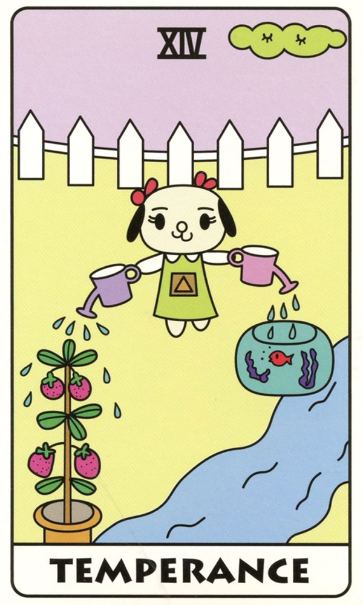
Figure 10: Balance in all things (Bi and Umezawa 2004)
Animals standing in for humans ask viewers to insert themselves into the scene, thus giving them a grounded, personal handle on the tarot’s meaning. For example, Dayan’s Tarot depicts both animal and human characters performing the esoteric scenes and poses (Kagami and Ikeda 2005, Figure 11). The cards are derived from Ikeda Akiko’s books about a cat named Dayan and his compatriots who live in the fantasy village of Wachifield. In the Empress card, meant to symbolize a plentiful harvest and female power, the Mother Bunny is surrounded by five child bunnies. In place of a luxuriously gowned noblewoman seated in her lush garden holding a scepter, this new symbol of rabbit fecundity is wearing an ochre cloak, and has a green wreath on her head. She is holding a sheath of newly harvested wheat. Again, the new tarot preserves the meaning of the Empress but does so in a way that recalls the magical familiarity of the Japanese children’s books.
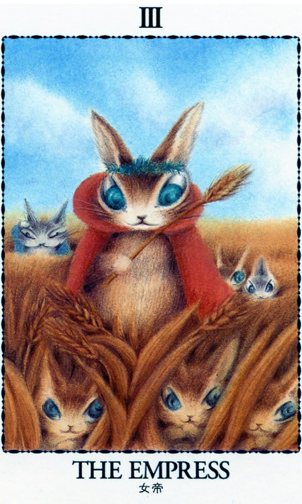
Figure 11: The Empress in Wachifield (Kagami and Ikeda 2005)
The deployment of adorable animals as substitutes for humans should not be interpreted as simply catering to a cultural craving for the aesthetics of cuteness. In fact, it is a strategy employed in multiple areas of popular culture that serves to allow wider identification with the figures, and is also reflected in such things as public service posters, etiquette books, and regional mascots (Miller 2010). In the case of tarot, replacement of medieval European queens, squires, popes, and hermits allows a non-white audience to more easily identify with the images. The animals strip the figures of ethnicity, nationality, and, in some cases, gender. In addition to Hello Kitty and Dayan, tarot featuring pandas, bat princesses, beckoning cats, penguins, r abbits, white gerbils, Inoue Toro the Sony cat, and many more as their main characters abound. These non-human characters invite the Japanese girl or woman into dialogue with a medieval foreign world, or with a newly formed intermediate world. They welcome Japanese people into the fold, where they join a sisterhood of tarot-knowers and lovers.
Adaptation from European images to Japanese ones takes other forms, too. Tarot devotees also use the deck as a canvas to explore symbolic meanings with images from Japanese history and religion. These new interpretive frames might retain the core archetypes of the cards or the symbolic meanings associated with them, but recast the figures as ones familiar to a Japanese audience. The producers and artists who 20 make these new cards study tarot lore and history and are therefore k nowledgeable about the traditional Christian-infused imagery and symbolism. Yet they also know that the esoteric references will not necessarily be meaningful or particularly attractive or interesting in a Japanese context, so inserting native archetypes and symbols into the tarot milieu proves to be a savvy and successful approach. It is also somewhat ironic that a borrowed Western form of divination now serves as a vehicle for a revived interest in Japanese history among young women in Japan.
There are many decks that draw on figures from Japanese legends and t radition, such as Yamamoto Naoki ’s (2014) tarot based on Japanese mythology. Similarly, Yasokawa Keiichi (2014) uses well-known characters and images from Japanese folktales to illustrate his deck. The card for Strength, for example, features Kintarō, a famous plump boy with superhuman strength. For the card representing the Hierophant (also known as The Pope or The High Priest), Yasokawa depicts a statue of the Bodhisattva Jizō. A Bodhisattva is a being on the path to becoming a Buddha. Using a Buddhist deity Figure as a substitution for a human religious practitioner is an interesting ploy that most likely indexes the ubiquity and popularity of Jizō rather than his role as a Bodhisattva.
One of the most arresting decks I have encountered uses deities and mytho-historical personages from one of the earliest written chronicles in Japan, the Kojiki (Records of Ancient Matters, compiled 711–712). Some of the substitutions are logical: The Sun Goddess Amaterasu for the Sun card, or Tsukiyomi; the Deity of the Moon, for the Moon Card; and Ninigi, Japan’s first mythological emperor, for the Emperor card. Others are more idiosyncratic, such as Yamatohime-no-mikoto for the Hermit (Figure 12). In the Kojiki account Yamatohime-no-mikoto was commissioned by her father, the emperor Suinin (11th emperor according to the mythology), to locate a suitable place for the enshrinement of the Sun Goddess, Amaterasu. Starting out from the Yamato palace in Sakurai, Yamatohime-no-mikoto wandered the region for twenty years before arriving at Ise, where she established the inner shrine dedicated to the Sun Goddess. The Hermit card represents a search for truth and wisdom, often as a solitary quest. Yamatohime-no-mikoto was the saiō (the High Priestess of the Ise Shrine) who never married. The card shows her as elderly and robed in the white and red clothing of the miko (shrine attendant). Despite the gender shift, this Japanese Figure represents the ultimate solitary quest.
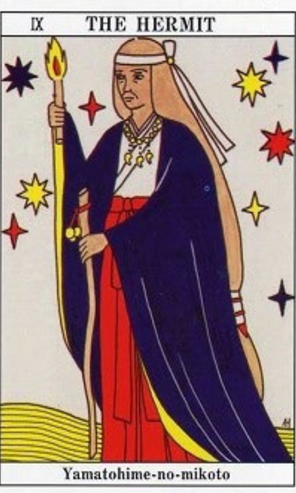
Figure 12: Yamatohime-no-mikoto from the Kojiki(Isaki 2008)
There are some obvious or logical reasons for substituting figures on the European tarot. Two figures in particular—an ancient queen and a medieval wizard— often replace the High Priestess card and the Magician card, respectively. One of the more common and fascinating substitutions is the historical Figure of Himiko (170–248 CE) as the emblem for the High Priestess. Himiko was the ruler of the earliest Japanese state, described by Chinese ethnographers in accounts that note her effectiveness as a political leader and a shaman specialist. She was reported to have unified 100 chiefdoms and to have been adept at divination and magic. Himiko is presented in popular culture in various ways, including solemnly regal, calculatingly evil, and frivolously erotic (Miller 2014b). Tarot cards that feature her are some of the most beautiful, intriguing, and challenging. In his card for the High Priestess, the artist Yamamoto Naoki (2014, Figure 13) substitutes an image of a young Himiko in a provocative pose, with her bare legs exposed. Perhaps he hints at an inferred sexual power attributed to her because the idea of female power residing in religious and political acumen might not function well for a modern viewer.
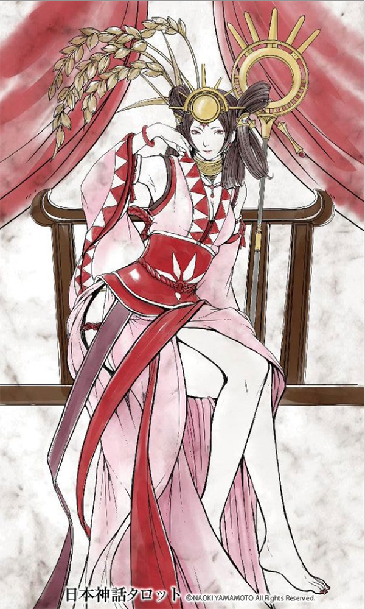
Figure 13: Shaman Queen Himiko (Yamamoto 2014)
The association of Himiko with magical power and expertise is so great that many tarot readers and writers have adopted her name as their own. Himiko Rose (Himiko Rōzu 2013) created a pretty tarot deck with vaguely Asian-looking figures. For the Hanged Man card she depicted a winged fairy girl wearing lilac and long boots, hung upside down in web. Another well-known divination expert who uses the name Moon Princess Himiko has also produced tarot decks (Kasai and Moon Princess Himiko 2002, see Appendix 1).
Another common replacement is to use a legendary onmyōji (wizard, literally “yin yang master”) to represent the Magician card. The wizard named Abeno Seimei (921–1005) became a colossal hit among female fans after he was the romanticized subject of novels, manga, anime and film from the 1990s (Miller 2008). Seimei was an occasional member of a guild of wizards officially part of the imperial court structure. In the tarot designed by Itateyama Misuzu (2012, Figure 14), Seimei is a handsome young man holding a pentagram, a symbol often associated with him that also adorns the many shrines that are dedicated to him today. Here, this symbol has a separate history from its appearance in the West, and was b orrowed into Japan from China, where it represented the Taoist concept of the Five Elements in balance.
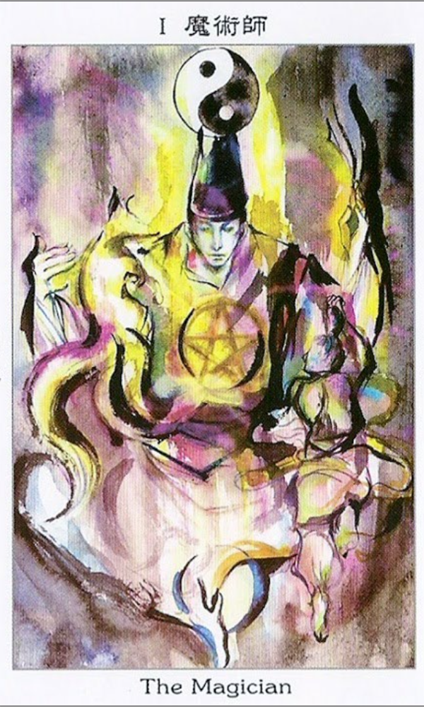
Figure 14: The wizard Abeno Seimei as the Magician card (Itateyama 2012)
What do we learn about contemporary Japan from surveying tarot cards? Perhaps we cannot divine the future, but we can see a wealth of cultural adaptation and a playfulness with figures and symbols that preserves messages typically associated with tarot but recasts them for an audience that is non-white, largely female, and highly attuned to visual messages. Clearly, the tarot is a go-between—an intermediary between two different philosophies or worldviews. We do not always find a smooth reconciliation of different cultural elements on the cards, and the imagery might occasionally leave us puzzled or uncomfortable. Nevertheless, the power of the card imagery to traverse different time periods, cultural settings, and complex WesternJapanese imagery is truly unique.
The use of established themes already circulating in Japanese mass culture, such as Dayan or Hello Kitty, brings the Japanese viewer into a visual relationship with foreign philosophical concepts. For example, in order to represent the concept of addiction to money, sex, food, and power, the European deck often portrayed a pair of humans chained to a huge satyr. The Devil card in Japan, however, might r epresent this idea instead as a type of unhealthy or hedonistic temptation, such as addictive cravings for food. In the Hello Kitty Devil card, Kitty-chan dreams of fattening pudding and donuts. In the deck by Kasai and Moon Princess Himiko (2002), a young man is furtively eating a pomegranate. Such substitutions gloss over the gaps between Christian and Japanese worldviews, allowing the tarot entry into different metaphysical cultures. In order to avoid a foreign pictorial paradigm that indexes Christian concepts such as resurrection, sin, and salvation, Japanese artists have shown impressive creative and imaginative engagement that melds existing tarot protocol with new elements and meanings. Using the currency of tarot, they c ontinue to exploit this divination medium to entertain, inform, and delight.
Additional Files
The additional files for this article can be found as follows:
- Additional File 1: Appendix 1. For additional examples of Japanese tarot cards (31 cards), please see Appendix 1: Supplementary Figures of Japanese Tarot Cards. https://doi.org/10.16995/ane.244.s1
- Additional File 2: Appendix 2. In addition, questions for classroom discussion are found in Appendix 2: Ideas for Classroom Discussion Laura Miller and Jan Bardsley. https://doi.org/10.16995/ane.244.s2
Competing Interests
The author has no competing interests to declare.
Author Information
Laura Miller is Ei’ichi Shibusawa-Seigo Arai Endowed Professor of Japanese Studies and Professor of Anthropology at the University of Missouri-St. Louis. She has published more than 70 articles and book chapters on Japan and linguistic anthropology. She is the author of Beauty Up: Exploring Contemporary Japanese Body Aesthetics 26 (University of California Press, 2006). Currently, Miller is working on a book entitled Diva Nation: Female Icons from Japanese Cultural History, co-edited with Rebecca Copeland.
Bibliography
- Akatsuka, F 1975 Zenbu kirinuku hon: Kamizumō kara tarotto made 107 shu (Complete Papercutting Book: From Sumo Cutouts to Tarot Cards 107 Types). Tokyo: Shufu to Seikatsu-sha.
- Akatsuki, R and Takano, A 2010 Kettei-han! Supirichuaru tarotto nyūmon (The Definitive Edition! A Spiritual Tarot Primer). Tokyo: Shufu no tomo.
- Bi, A and Umezawa, S 2004 Anjeri no yasashii tarotto nyūmon: Tarotto kādo de uranau, asobu (Anjeri’s Simple Tarot Manual: Divination and Fun with Tarot Cards). Tokyo: Interwork.
- Clifford, J 1988 The Predicament of Culture: Twentieth-Century Ethnography, Literature, and Art. Cambridge: Harvard University Press.
- Fukuda, R 2003 Love Love Tarot. Seventeen Number 36, February. Magazine insert supplement.
- Gruzinski, S 2002 The Mestizo Mind: The Intellectual Dynamics of Colonization and Globalization. Translated by Deke Dusinberre. New York: Routledge.
- Himiko, R 2013 Za mirā tarotto (The Mirror Tarot). Tokyo: Jitsugyo no Nihonsha.
- Hoshi, S and Satō, Y 2013 Aisare gāru no gaikotsu tarotto: Happī ōra o te ni ireru (The Loveable Girl’s Skeleton Tarot: A Happy Aura in Your Hands). Tokyo: Tōhōshuppan.
- Isaki, J 2008 Kojiki tarotto kiso kaisetsu (Kojiki Tarot Basic Commentary). Tokyo: Murasaki-do.
- Itateyama, M 2012 Wa tarotto (Japan Tarot). Tokyo: Azusa Shoin.
- Izumi, R and Kumagai, K 2009 Pātikuru tarotto (Particle Tarot). Magazine insert supplement. Koiunreki, May, no. 96.
- Jitsugyo no Nihonsha 2012 Otona no natta shōjo-tachi e My Birthday (For Girls Who Grew Up: My Birthday). Tokyo: Jitsugyo no Nihonsha.
- Kagami, R 2007 Kirakira koi no tarotto uranai (Sparkling Love Tarot Divination). Tokyo: Futami shobō.
- Kagami, R 2009 Harō kitei no tarotto urani (Hello Kitty Tarot Divination). Tokyo: Takedāndom House Japan.
- Kagami, R and Ikeda, A 2005 Dayan no tarotto kādo (Dayan Tarot Cards). Tokyo: Hakusensha.
- Kasai, A and Himiko, M P 2002 Ai to shinbi no tarotto uranai: Kasai Ayumi orijinaru kādo 78 mai (Love and Mystery Tarot Divination: 78 Original Cards by Kasai Ayumi). Tokyo: Seibidō Shuppan.
- Miller, L 2008 Extreme Makeover for a Heian-Era Wizard. In: Lunning, F (Ed.) Mechademia: An Annual Forum for Anime, Manga and the Fan Arts. Issue #3: Limits of the Human. Minneapolis, MN: University of Minnesota Press, pp. 30–45. DOI: https://doi.org/10.1353/mec.0.0034
- Miller, L 2010 (Spring) Japan’s Zoomorphic Urge. ASIANetwork Exchange, 17(2): 69–82. DOI: https://doi.org/10.16995/ane.208
- Miller, L 2011 Tantalizing Tarot and Cute Cartomancy in Japan. Japanese Studies, 1(31): 73–91. DOI: https://doi.org/10.1080/10371397.2011.560659 Miller, L 2014a The Divination Arts in Girl Culture. In: Satsuki Kawano, S, Roberts, G S and Long, S (Eds.) Capturing Contemporary Japan: Differentiation and Uncertainty. Honolulu: University of Hawai’i Press, pp. 334–35. DOI: https://doi.org/10.21313/hawaii/9780824838683.003.0011
- Miller, L 2014b “Rebranding Himiko, the Shaman Queen of Ancient History.” In: Lunning, F (Ed.) Mechademia, An Annual Forum for Anime, Manga and the Fan Arts: Issue #9: Origins. Minneapolis, MN: University of Minnesota Press, pp. 179–198. DOI: https://doi.org/10.1353/mec.2014.0015
- Mizuki, S 2002 Mizuki Shigeru no sekai yōkai tarotto kādo (Mizuki Shiger’s Tarot Cards of From The World of Demons). Tokyo: Shueisha.
- Yamamoto, N 2014 Nihon shinwa tarotto (Japanese Mythology Tarot). Selfpublished by the artist. Available at: https://yamamoto-naoki.stores.jp/ items/5375b73c236a1e6ec200002d (Accessed August 1, 2016).
- Yasokawa, K 2014 Nihon mukashi banshi tarotto (Tarot of Japanese Fairytales). Osaka: Hatkei Artwork.
Notes
1. Detailed descriptions of tarot and other divination services and industries are found in Miller (2011, 2014a).
2. Adam McLean’s website Art Tarot Project: Collection of Modern Tarot Decks lists 2,321 decks from around the world as of 2012. Online at http://www.alchemywebsite.com/tarot/tarot_collection.html Accessed August 1, 2016
3. The ritual, religious, and spiritual aspects of tarot culture, as well as a discussion of attitudes about their efficacy or reliability, are found in Miller (2011).
How to cite this article: Miller, L 2017 Japanese Tarot Cards. ASIANetwork Exchange, 24(1), pp. 1–28, DOI: https://doi.org/10.16995/ane.244
Published: 05 April 2017
Copyright: © 2017 The Author(s). This is an open-access article distributed under the terms of the Creative Commons Attribution 4.0 International License (CC-BY 4.0), which permits unrestricted use, distribution, and reproduction in any medium, provided the original author and source are credited. See http://creativecommons.org/licenses/by/4.0/.
ASIANetwork Exchange is a peer-reviewed open access journal published by Open Library of Humanities.